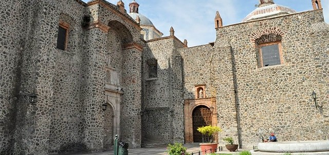
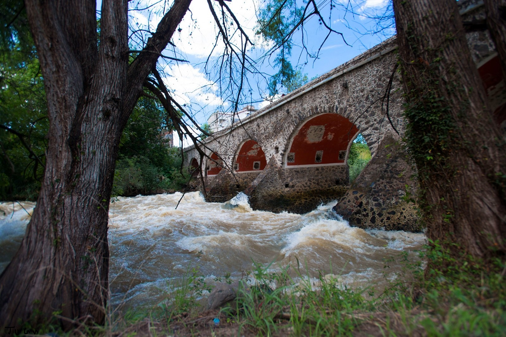
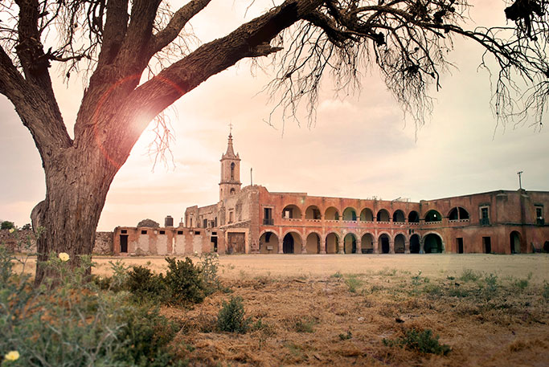
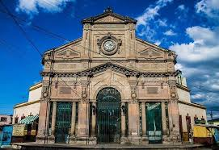

Lugares turisticos de salvatierra


1-Templo del carmen
 |
uno de los templos mas bellos de la ciudad, con una arquitectura impresionante y un gran valor historico
2-Puente de batanes

Un puente de piedra, rodeado de gran historia y paisajes naturales.
3-Ex hacienda de san jose del carmen

Una ex hacienda llena de arquitectura colonial y mucha historia,
4-Mercado Hidalgo

El lugar para disfrutar de la comida regional y vivir un ambiente tradicional.